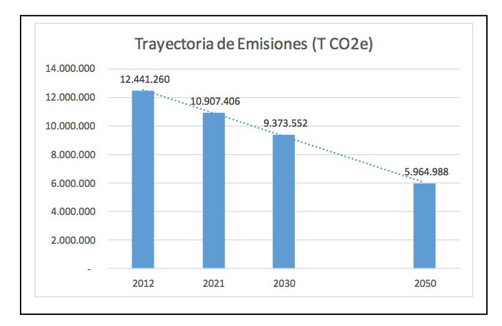

San José,
September 2015
The changes in the world’s climate are a reality happening today. It becomes clearer, every day, that this phenomenon will have a larger impact on the country’s development, which is why, the National Development Plan sets, very clearly, climate change as cornerstone of every strategic action to be performed during the next four years. As part of our international commitment, Costa Rica is presenting its Intended Nationally Determined Contributions (INDC) under the United Nation’s Convention framework for Climate Change, which defines our commitment to climate action from now and until the year 2030.
Costa Rica will center its climate change actions on increasing society’s resilience to the impact of climate change and strengthening the country’s capacity for a low emission development on the long term. Costa Rica will strengthen its climate action with efforts in reduction of emission of greenhouse effect gases, following scientific suggestions of what would be necessary to avoid the worst effect of climate change. Climate action will be based on balanced efforts of adaptation to ensure that communities, especially vulnerable communities, become resilient to the unavoidable impacts of climate change.
Costa Rica is looking into becoming a laboratory for the world’s economy deep de-carbonization process, working with civil society, the private sector, academia, and the international community in order to accomplish it. Costa Rica has a long standing tradition of innovation on hydroelectric generation, in conservation and specially, on matters of climate change. This tradition is well evidenced in the country’s commitment towards the United Nations’ Framework Convention for Climate Change (CMNUCC), to avoid dangerous anthropogenic interference in the climate system and the goal of “keeping the average temperature increase leveled at 2° and consider reducing this limit to 1.5°”. To accomplish it, global emissions of Greenhouse Gases (GHG) need to stay below a total of 1000 Giga-tons of CO2 from 2012. Intended Nationally Determined Contributions (INDC) represent the effort each country is willing to commit to build a new climate regime past 2020, based on their capacity and reality. To stay within the limits recommended by scientists to be able to accomplish this goal, such regime would have to be ambitious, be legally binding, set a fair price for carbon and have the necessary means of implementation to address climate change challenges.
First, Costa Rica would like to reaffirm its aspiration of becoming a Carbon Neutral economy starting year 2021, as a culmination of its voluntary, pre-2020 action. Under this early action, Costa Rica proposed since 2007 to compensate its emissions through the removal or offsetting by the forest sector. The goal proposed to achieve Carbon Neutrality by 2021 with total net emissions comparable to total emissions in 2005. Since then, the mitigation goals agreed by the Conference of the Parties have evolved, and the mitigation efforts must aspire to maintain the mean global temperature below 2°C. In this National Contribution, the date of 2021 will become the turning point Costa Rica’s emissions, as a continuation of its voluntary action and a landmark in the path towards de-carbonizing the economy.
Second, the country is committed to a maximum of 9,374,000 T CO2eq net emissions by 2030, with proposed emissions per capita of 1.73 net tons by 2030, 1.19 Net Tons per Capita by 2050 and -0.27 Net Tons per Capita by 2100. This numbers are consistent with the necessary global path to comply with 2°C goal. Costa Rica’s commitment includes an emissions reduction of GHG of 44%, of a Business As Usual (BAU) scenario, and a reduction of 25% of emission compared to 2012 emissions. To accomplish this goal Costa Rica would have to reduce 170,500 tons of GHG per year until the year 2030.
Image 1. Total Net Emissions of GEG projected for Costa Rica 2012-2050 [1]

Projected Emissions
Proposed mitigation activities and context can be found in Appendix 1.
Type
Maximum Net Emissions Limit for Greenhouse Gases.
Scope
100% of national emissions accounted for in the National Greenhouse Gas Inventory
Gases Included
Period
January 1st, 2021 - December 31st, 2030
Absolut Maximum Limit
Net Emissions 9,374,000 TCO2e by 2030
Transparency and Accountability
Costa Rica has adopted an Open Government policy. It is looking into strengthening accountability mechanisms, information access and availability, and citizen participation. The National Environmental Information System (SINIA) was created under the National Geo- Environmental Information Center (CENIGA) at the Ministry of Environment and Energy, and is hoping to promote an open data policy for all relevant climate information available for any citizen. There will be, as well, two open participation councils, one technical-scientific and one multi-stakeholder platform which will accompany the government’s climate planning and management.
Methodological Approximations and Assumptions
Using the International Market Mechanism
Costa Rica reserves its sovereign right to use international compensation units to accomplish its goals within the National Contribution or, as well, within its Domestic Compensation Market. Any compensation units traded abroad will be registered in the National Emissions Inventory to avoid double accounting.
Costa Rica has included an Adaptation to Climate Change component in its National Contribution, with clear commitments for 2030. The country is currently designing a road map for its National Adaptation Plan, and is committed to develop it before 2018. The country will continue with its Green and Inclusive Development policy through local actions in adaptation, such as, inter alia, the strengthening of conservation programs and expanding the environmental services payments program to include Ecosystem based Adaptation. Also, Costa Rica will continue to promote renewable energies, integral environment management through agro-forestry systems and watershed management, as well as municipal land use planning as tools to lower long term vulnerabilities of its population, enhance its food security and the resilience of its infrastructure. Climate Change Adaptation will have as one of its components the National Disaster Risk Management Policy, through capacity building for resilience and technology transfer (refer to Appendix 2 for more details on Contributions on Adaptation).
Costa Rica has a century old tradition of investment in public education, and it’s one of the few countries in Latin America to invest 8% of GDP in public education. This becomes a unique opportunity to use that installed capacity to educate Costa Rican citizens of today and strengthen university research to develop science and technology needed to support the mitigation and adaptation goals proposed in the National Contribution.
Over a century ago, Costa Rica, decided to take advantage of its hydro potential for generation, long before climate change was a critical element in decision making. Today, Costa Rica’s installed capacity for electricity generation in predominantly renewable, a product of 115 years of public investment and innovating policies to supply electricity to more than 98% of Costa Ricans. In the 1970s, the National Park Service was created, today; its protected areas cover 25% of the territory and serve as an international tourism attraction, one of today’s main income activities for the country. Costa Rica selected from very early moments a path of sustainable development to provide wellness to its citizens of today and the future. This path has taken the country in a continuous innovation and experimentation, where science has helped adjust periodically the public policy and development strategies’ goals.
During the nineties, Costa Rica contributed to the global awareness on climate change, becoming part of the first joint implementation projects, helping use market tools and approaches to finance forestry activities even before the Kyoto Protocol’s Clean Development Mechanism was adopted. Among some of these first projects, led to the internalization of environmental costs, through a pioneering Environmental Services Payment program (PSA). This last program became a world standard in matters of use of market mechanisms for forest conservation, which, together with the National Conservation Areas System (SINAC) and Forestry law #7575 of February 16th 1996, allowed Costa Rica to achieve a 52.4% of forest coverage by 2013. The total stock carbon stock, according to the national forestry inventory comes to 804,593,099 tons of carbon, 52% of which is contained underground. The additional carbon dioxide sequestration potential is being evaluated under the light of more detailed metrics, the role of results-based-payments for reduced emissions from deforestation and degradation, the role of increased carbon stocks, carbon stock conservation and sustainable forest management which must be adapted to emerging objectives and requirements.
Since 1990, Costa Rica has performed six emissions inventories for GHG led by the National Meteorology Institute (IMN). The definition of sound metrics based on methodologies sanctioned by the IPCC has helped build this national contribution based on accurate and verifiable data. A broad-based consultation process allowed for different sectors to provide inputs into this national effort, and be able to define their own internal policies for mitigation and adaptation.
In 2007, Costa Rica´s National Climate Change Strategy was launched, supported by the creation of a Climate Change Department at the MINAE (Ministry of Environment and Energy), in charge of implementing and following up on international commitments and implementation of policies. Among these policies, Costa Rica announced its goal of achieving Carbon Neutrality by 2021, which aims to lower the country’s net emissions to the levels of 2005. Through its C- Neutral Country Program, organizations may be awarded a C-Neutral Certification after submitting to an emissions assessment based on agreed standards and a reduction activities evaluation. This program offers the opportunity to compensate emissions, which could not be reduced due to financial balance or technology barriers, by offsetting them through investment in environmental services programs such as National Forestry Finance Fund (FONAFIFO). New options for compensation should be also made available through the Domestic Carbon Market of Costa Rica, which is in a pre-operation stage, by designing regulations, procedures and protocols. MINAE is developing the regulatory framework and designing which institutions would be responsible for domestic market regulation. Costa Rica reserves the right to use the Domestic Carbon Market as an instrument to accomplish its mitigation goals, as a complement to national and sectorial policies for emissions reduction.
The National Forestry Financing Fund (FONAFIFO) which the MINAE has been developing, since 2010, is currently developing its Emissions Reduction Program under the Carbon Fund (FCPF), known as the National REDD+ Strategy since 2010. Therefore, if Costa Rica receives payments for emission reduction from the Carbon Fund, it is expected for these carbon credits to be accounted starting in 2010. The metrics to assess the potential for removals through forest sinks in Costa Rica is currently under review and in continuous improvement by the country’s authorities, this data will be adjusted as part of the preparation of the Emissions Reduction Program (ERPA) of the Carbon Fund (FCPF).
As a pioneer country in the search for alternative ways for decarbonizing the economy, Costa Rica has a range of political instruments, both in mitigation and adaptation. In 2011, Costa Rica presented its Technological Needs Assessment (TNA) which posted a strategy for technological transfer and access to support greenhouse gas mitigation (GHG), and reduce vulnerability to adverse effects of climate change. In this evaluation, the following sectors and climate actions where prioritized: Public Transportation Integration and Decongestion, and Energy Conservation and Efficiency. In adaptation, two approaches were proposed, the adaptive co-management at the watershed level and detailed (sub-national) climate change scenarios. One of the approaches proposed with impacts both in mitigation and adaptation: Sustainable Agricultural Production.
Costa Rica has been reforming the structure of its Executive branch, especially, through the Environmental Law of 1995, which created the National Environmental Council. Almost a decade after this law, in 2014, a new structure for the executive branch was proposed, creating, among other organizations, the Environment, Energy, Sea and Land Use Sector Council, which brings together 14 autonomous and government organizations responsible for environmental policy. This Sectoral Council for the Environment has climate change and land use planning as its cornerstones. A Climate Change Department under the Strategic Planning Department of the Environment and Energy Ministry, will work as a Secretariat to the Inter-ministerial Council for Climate Change, facilitating coordination between ministries to implement national and sectorial climate policies. The Inter-ministerial Council for Climate Change was created through the Executive Decree #35669 of January 6th of 2010, which defines the MINAE’s Organic Regulation and appoints MINAE’s Climate Change Department as the entity in charge of implementing climate change policies.
The 2015-2018 National Development Plan sets the main policy objectives for the Solis Rivera Administration. In matters of climate change, the National Development Plan proposes as a strategic objective the promotion of actions against global climate change, through citizen participation, technology changes, innovation, research, and knowledge to guarantee security, human safety and the country’s competitiveness.
For such purpose, under the 2015-2018 National Development Plan, there are two relevant results relevant to climate change policies:
Reduce climate change’s impact and variability, increasing the adaptive capacity and disaster risk management, providing better resilience to vulnerable sectors.
Support the key sector emission reduction activities (transport, energy, agriculture, solid waste) to drive the low emission development transformation process to achieve the county’s Carbon-neutral goal within National Contribution framework under the Climate Change Convention Framework of the United Nations.
As part of its “Open Government” policy, during 2015, a number of sector-wide dialogues were organized by Costa Rica’s government, bringing together key stakeholders to discuss the country’s greenhouse effect gas reduction goals, within the INDCs context. Theses dialogues have enabled a clearer definitions of the sectoral plans and programs needed to accomplish the country’s climate action goals.
The Climate Change Policy derived from the acquired commitments within this National Contribution, has a multi-sector focus, since we all agree that climate change, more than just and environmental problem, is a development matter which requires effective climate actions through activities in the transportation, energy, forestry, agricultural, livestock and waste management sectors. This will require strengthening the inter-sectorial coordination platforms, such as, the National Environmental Council, the Environment, Energy, Sea and Land Use Sectorial Council, and the Inter-ministerial Council for Climate Change.
The VIIth National Energy Plan 2015-2030, sets a clear path towards a low emission development pathways by strengthening policies on energy efficiency and the promotion of renewable energies. Confirms the country’s commitment to accomplish better energy efficiency, both in energy use and fuel end-use. In 2015, the Joint Commission between the Ministry of Environment and Energy and the Ministry of Agriculture was created to develop a common Agro-Environmental Agenda. The Vice-Ministries of Energy and Transportation have created an Ad-Hoc coordination mechanism which has allowed a better implementation of energy efficiency and mitigation policies within the transport sector. This change, within the country’s energy sector, was fully supported during the sectorial round tables. MINAE has also launched its Biodiversity National Strategy, which will have important components and relevant action to the country’s mitigation and adaptation goals. The National Action Plan was also used to fight land degradation, which will have significant contributions to rural environment management in mitigation and adaptation.
As previously mentioned, Costa Rica reserves the right to use market mechanisms to accomplish its mitigation goals. MINAE’s Executive Decree #37926-MINAE of November 11th of 2013, creates a Carbon Board, and decrees the Operation and Regulation of the Domestic Carbon Market, and MINAE’s decree #39099-MINAE of September 10th of 2015, outlining the Structure, Guidelines and Requirements to introduce actions into the Domestic Carbon Market and its digital access. These market mechanisms will be restructured to optimize them into an inter-sectorial implementation mechanism complementary to the previously mentioned institutional management driven by National Contribution and the Post 2020 International Climate Regime.
In summary, the National Contribution will be implemented by the following entities:
Inter-Ministerial Council for Climate Change, which will allow to discuss, define, and follow up on climate change policies.
Ad-Hoc Operational Coordination Mechanism such as: Joint Commissions (agriculture and forestry, transportation and energy), which will coordinate the inter-sectorial implementation agendas under the National Climate Change Strategy.
MINAE’s Climate Change Department, in charge of coordinating the implementation of the National Climate Change Strategy and supervising the definition of technical standards, closely coordinated with other sectorial directions and institutions related to MINAE (Energy Department, National Meteorological Institute, National Forestry Finance Fund, National Conservation Areas System, National Forestry Administration, among others).
The Climate Change Scientific Council will be created to advise the Environmental Sector Council, particularly its lead Ministry (MINAE). This Council will include international and national experts and academics, as well as members of the National Meteorological Institute (IMN), from the National Agricultural Technology Institute (INTA), from the National Council of Universities (CONARE), and from the National Geo- Environmental Information Center (CENIGA).
The Climate Change Citizen Consultation Council, which will create a permanent citizen participation forum on climate change, with wide private sector participation, organized civil society and academia to provide continuity to subjects and workgroups emerging from the sectorial forums in climate change.
Under the Paris Agreement reached at COP21, Costa Rica will be part of, starting in 2016 and until 2020, a process of legal, institutional and organizational change in order to facilitate the implementation of this National Contribution starting in January 1st of 2021. The pre-2020 period will be critical to improve metrics, test new productive low emission practices through NAMAs and the low emission sector-wide development strategies, and to develop the National Adaptation Plan, and to fine tune and negotiate the regulatory and institutional framework required to be able to implement these new climate change policies. The 2015-2020 period will also be used to align the allocation of financial resources with the mitigation and adaptation goals proposed in the National Contribution.
Although Costa Rica has been able to sustain a Sustainable Development Policy over the past decades, this would not have been possible without access to adequate means of implementation. This National Contribution will require renewed efforts in the allocation of financial, technical and institutional capacity development in order to improve its emission reduction and climate change adaptation technology access.
In terms of financial resources, the emission reduction goal definition process, coordinated by MINAE, allowed for a first review of the marginal abatement costs of the identified main mitigation measures. This review will become an important input for the definition of investment priorities within the most critical sectors for mitigation, such as transportation, energy and agricultural sectors. As an example, the construction of an inter-city electric train will require both fiscal resources as well as external financial resources that will need to be developed. As well, a cost estimate of the main adaptation measures will be performed within the drafting of the National Adaptation Plan. Costa Rica has made headway in the Green Climate Fund (GCF), and its recently approved readiness program will help to create the institutional and fiduciary structures and mechanism required for managing this new fund. These methods include the development of the technical and scientific capacity of the country, with a co- investment in research and development.
Through the Scientific Council, the Citizen Consultation Council and other ad hoc entities, Costa Rica will review the metrics and goal agreed upon for emission reduction and define the dates for the sector’s carbon neutrality, under a focus of continuous improvement. The Sectorial Dialogues on Climate Change organized during 2015 identified key measures for emission reduction by sector which will require additional policy planning and management processes supported on the inter-ministry coordination mechanisms mentioned above. These key climate change policies will build upon the consensus achieved within the different sectors on the road map for the National Contribution and will help deliver on the climate actions needed to make Costa Rica’s de-carbonization pathway and its Climate Change Adaptation Plan a reality. We expect to take full advantage of the existing institutional mechanisms, while continuing with design, application and collaborative evaluation of climate policies. The government will confirm its role as a facilitator of enabling conditions which will allow the different sectors, communities and society in general define their mitigation and adaptation goals, based on their own economic, social and cultural, gender sensitive options for the wellbeing of a low emission economy.
Costa Rica believes its contribution is ambitious because it proposes a transformation into a low emissions economy. We have to consider the wide range of climate actions, adopted from very early on, to align Costa Rica onto a path consistent with a resilient, low emissions development. The National Contribution looks to reinforce this historical commitment, increasing its emissions reduction goals to go beyond emission compensation from avoided deforestation, promote a low emission development, not only in the electricity sector, but also, in the transportation, agricultural and urban waste management sectors. Costa Rica’s long term goal is challenging because it’s looking to accomplish zero net emissions by 2085, with several opportunities to periodically review the national and sector strategies to ensure this long term goal.
Costa Rica’s size located between two oceans make it a highly vulnerable country to the adverse impacts of climate change. The adaptation goals proposed in this National Contribution try to confront the challenge of recurrent loss and damage due to extreme hydro-meteorological events. This National Contribution looks to strengthen the country’s adaptation capacity, through an effective risk and adaptation management based in both the community and the ecosystems.
Both climate policies and the actions that derive from them will base themselves in the country’s historical commitment to universal human rights and gender equality principles. Costa Rica favors a transformational approach to gender in public climate change policy, and supports the participation of women in policy making and climate actions implementation. This will require a full compliance with Cancun’s safeguards on REDD, as well as, securing the indigenous people’s Prior, Free and Informed Consent. Also, it’s expected to increase citizen forums through the pre-2020 period to define the best climate governance arrangements to deliver on the commitments acquired in this National Contribution.
Costa Rica’s transition into a resilient and low emissions economy will require an integrated focus on energy and climate policy, based not only, on a cost-benefit analysis, but also on a broader assessment of the social and environmental costs of a sustainable development pathway. The mitigation options proposed by Costa Rica in its National Contribution can be categorized into four broad policy options:
In the National Emissions Inventory of 2010, emissions from the energy are mostly caused by fossil fuels used in electric generation. There are a lot of opportunities to work with the industrial sector on energy conservation and fuel switching in productive processes to reduce energy demand and decarbonize the energy supply. The VII National Energy Plan 2015-2030 defines energy efficiency and distributed generation as priorities. The hopeful goal of this contribution is to achieve and maintain a 100% renewable energy matrix by 2030. The increase in energy efficiency in residential and industrial consumption will result in a reduced electrical demand from these sectors. On the other hand, we anticipate an increase in electricity consumption in the transportation sector. Most of the proposed emissions abatement measures hinge on a greater use of electric transportation, both public and private. These measures had a greater level of consensus in the transport and energy sector dialogues. Public Transportation needs to improve its fleet composition as well as its working design. This can be accomplished through an Integrated Public Transportation system where routes are improved, train service strengthened, and availability of non-motorized transportation enhanced, etc. Costa Rica has made the intercity electric train a priority, which will provide a significant contribution to the country’s emission mitigation goals, creating new employment and low emissions mobility. It is necessary to improve the freight sector through multi-modal options. This will require an ambitious investment portfolio in sustainable transportation over the coming decades.
The Costa Rican Agricultural sector is the second highest sector in compound emissions due to its Nitrous Oxide and Methane production. However, this is a sector that is looking earnestly into emission reduction through different measures which can both reduce emissions, while increasing productivity and the range of environmental services provided by agriculture and livestock production. During discussions with the agricultural sector, it was clear that an offer of environmental services requires investment, political will and a new inter-sectorial institutional arrangement. Among investment mechanisms available to improve acknowledgement of the agricultural sector’s contribution to emission reduction, the market may play an important role in financing, at the farm level, additional mitigation efforts, with a payment for results scheme, carbon auctions, and financial mechanism to promote initial investments and guarantee financial sustainability beyond international cooperation. The availability of credit and microcredit, as well as, incentives for clean energy use and water reductions will be critical to ensure the uptake of low emission technology development in the agricultural sector. To be able to develop market incentives and commercialization of agricultural products with lower carbon footprint, it is necessary to strengthen local and national markets, with timely access to information. As an effort to improve inter-sector practice of mitigation measures and metrics, Costa Rica is promoting its NAMA in the coffee sector, and developing NAMA proposals for livestock and biomass, and for a very important sector of its economy, the Small and Medium Enterprises. The National Low Carbon Livestock Strategy sets goals for the country’s low carbon development in the milk and beef value chains, which will be benefited from technology and organizational innovation derived from the ongoing pilot programs within the Livestock NAMA. Other efforts such as the creation of a National Territorial Information System (SNIT), within the National Registry, should include land use change monitoring systems, which will significantly contribute to the Monitoring, Verifications and Reporting (MRV) systems improvement proposed under FONAFIFO’s Emission Reduction Program.
Costa Rica is currently pursuing a green and inclusive development policy. The agricultural and forestry sectors share the same territory and require a harmonized environmental policy to be able to comply with rural development objectives, as well as, emission reduction and climate change adaptation. The integration of rural development agenda together with the REDD strategy will allow for an accurate and coordinated management of adaptation and mitigation actions in Costa Rican agriculture. FONAFIFO’s payment for environmental services program has contributed to maintain a million hectares under forest cover, outside of protected areas. Although the potential emission reduction in the forestry sector is lower than the previous estimates due to the country’s forest being manly mature forests with high carbon stocks, and lower carbon fixing capacity. With this in mind, it is important to remember that the forestry and agricultural areas of the country provide a range of environmental services (water, biodiversity, soil conservation) that go beyond just carbon sequestration. Sector discussion and forums related to the REDD+ Strategy revealed a consensus about the need for improvement of the country’s forestry resources governance, which will guarantee, over the long term, Costa Rica’s capacity for generating wealth, as well as environmental goods and services. To accomplish this goal, there is need to clearly define the rights over forest resources, carbon, and other environmental services provided by forest and agricultural systems in Costa Rica. This goal needs to help manage forest health and set landscape natural restoration/regeneration objectives as an integral part of mitigation practice, while recognizing the adaptation co-benefits it may create. There are important synergies to be created between the agricultural sector, and the construction, tourism and industry sectors.
Solid waste is the third biggest emission source and is continuously growing. The publication of Official Urban Development Plan for the Metropolitan Area and the Land Use Planning National Policy, involve critical measures that have a bearing on GHG emissions. Costa Rica’s has begun the design of a Low Emission Development Strategy for the urban sector, together with potential NAMAs in transportation and waste management, sustainable housing, all together represent important steps to reduce emissions from cities. The strategies main stakeholders would be the Ministry of Housing (MIVAH), as the director for urban development, the Ministry of Health (MINSA), as the director in waste management, the Ministry of Environment and Energy and the municipalities around the country, especially those located in the metropolitan area of San José. The measures related to sustainable construction and targeted to reduce its carbon footprint, such as, construction waste reduction, through increased use of lumber, adoption of technology, new material and operations that are climate smart, combined with sustainable urban development measure may generate significant emission reductions. Among some of the abatement measures discussed during the sectoral dialogues, Integrated Waste Management was one that can help to address the growth in emissions from solid waste, which include waste segregation at the source and broader recycling and organic composting programs.
Costa Rica defined in 2006, in its National Climate Change Strategy (ENCC), the strategic framework for climate change policies, setting six strategic pillars, Mitigation, Adaptation, Capacity Building, Financing, Public Awareness and Education, and Cultural Change, Metrics.
This commitment related to climate change adaptation is part of Costa Rica’s National Contribution (INDC) under the United Nations’ Framework for Climate Change, and will be reviewed in 2016 as part of the National Climate Change Strategy.
Costa Rica’s vulnerabilities to Climate Change
In the past decades we have observed important changes in rainfall and increase of average temperature in Costa Rica, which adds to changes on land use and soil degradation processes. If the climate variability conditions continue to dominate the annual weather, there are multiple phenomena that may increase or lower their frequency or intensity. As a result, Costa Rica’s weather will be subject to simultaneous extreme drought and extreme rain.
As a result of climate change, the impact of hydrological events continues to increase. Considering only direct loss, these extreme climate events have created economic losses estimated around 1.13 Billion US Dollars of 2011, representing damages for 2005-2011. Regarding impact to sectors, road infrastructure has experienced the biggest impact, followed by power distribution networks, agriculture and housing; four vital activities for country development. It is estimated that 78.2% of these damages are in public infrastructure, while the rest is private property. If the country continues to follow its current path, according to some studies, in 2030 losses will amount to more than 7 Billion US Dollars, accounted since 2006, and could reach by 2050 almost 30 Billion US Dollars. These losses are bound to have a greater impact on vulnerable groups like women, children and people in extreme poverty.
Costa Rica has published a number of vulnerability assessments in agriculture, biodiversity, infrastructure, food security, freshwater resources and coastline sectors. By far, the most vulnerable sectors are related to water supply and agriculture sector where increasing research and knowledge on climate change is considered a great challenge in order to increase their adaptation capacity. Ongoing efforts to develop adaptation measures for the water and biodiversity sectors, including the National Conservation Areas System (SINAC), have resulted in the launch of a National Ecosystem-based Adaptation Strategy. Increase focus will be given to building resilience from a sustainable development, food security and rural productivity perspective.
Costa Rica’s Adaptation Action for 2016-2030
Starting from an acknowledgement that synergies between adaptation and mitigation activities are highly desirable, through development of concrete climate actions, Costa Rica assumes, for 2016-2030, the following commitments in adaptation:
Develop a National Adaptation Plan
Although since 2006, the country has a National Climate Change Strategy, it has not developed as yet a National Adaptation Plan. Costa Rica hereby assumes a commitment to have such a National Adaptation Plan ready by 2018, which will combine a sectoral and territorial focus, with at least ten plans for sectors and territories identified as priorities (Biodiversity, Agriculture, Water, Coastline, Fishery, Health, Infrastructure, Energy, Tourism, Cities), also, takes on the commitment to find sustainable financial sources to implement such plans.
Disaster Risk Reduction
Costa Rica has internationally committed, through the Geneva Pledge signed in February and endorsed by 20 other countries, to develop an exchange of experiences on matters of Human Rights and Climate Change. One of the main threats to human safety in Costa Rica comes from the impact of extreme weather events. Although Costa Rica has improved in the past years its disaster risk management policies, it continues to experience negative consequences caused by extreme weather events. Costa Rica is finalizing its National Disaster Risk Management Policy 2016-2030 with the following pillars Risk Reduction, Disaster Response and Readiness, and Disaster Recovery, with climate change adaptation as a cross-cutting issue.
Community Based Adaptation
Aware of the fact that adaptation has to be a community-led process. Community based Adaptation seek looking to empower the population to face climate change impacts, by increasing the resilience agriculture producers, developing safeguards for securing water supply and sustainable coastal zone development. Costa Rica is committed to promote Green and Inclusive Development (DVI), which favors the implementation of sustainable productive systems, in rural areas with lower human development indexes and vulnerable to climate change in priority productive territories over a 10 year period between 2016 and 2026. Since 2014, Fundecooperación has been implementing a program financed by the Adaptation Fund which will provide resources and technical assistance to over 30 community based adaptation projects. Learnings from these pilot projects will enable feedback into Costa Rica’s National Adaptation Policy.
Ecosystem Based Adaptation
In the past 30 years the country has been able to revert one negative effect of the agro-exporter model which reduced forests, been able to shift from 26% forest coverage to a 54.4% by 2013. To accomplish this shift, the country developed several strategies, a National Protected Area System (SINAC) was established which, today, covers 26.5% of the national territory, reforesting and private land forest management was promoted and facilitated, the Environmental Services Payment program was created and land use changes of forest lands were prohibited by law.
Costa Rica is committed to develop its adaptation practice from an ecosystem based adaptation focus, building on the commitment to increase forest coverage to 60%. At the same time, there are opportunities for exploring synergies between adaptation practices and the reduction of emissions through avoided deforestation. These include, inter alia, the consolidation of FONAFIFO’s Environmental Services Payments program and the Forest Certification program as a mechanism to promote the sustainable development forest resources and effective protection of water sources for all 81 counties of Costa Rica; the promotion of the National Biological Corridor System and the National Protected Areas System (SINAC).
Local Planning and Management of Territory Adaptation
For several years the country has recognized the urgency of having a national land use planning organization that would help guide land use policies in accordance to capacity and sustainable use of natural resources. A territorial approach to urban growth management would help minimize environmental impact caused by human activity, reduce disaster risk, and enhance resilience to climate change, as well as, providing participative instruments for informed decision making at the local, municipal level. This Territory and Urban Planning Organization will constitute a tool to reduce vulnerability over the long term. Under this approach, Costa Rica commits to having in every city, by 2020, and every coastline county in the country, a land use plan which considers vulnerabilities to climate change and measures for increasing adaptation and mitigation.
Public Infrastructure Adaptation
Record on loss and damage due to extreme weather event show that public infrastructure is the sector that is most affected, that is why the country commits to have by 2020, the methods to identify and correct physical vulnerabilities on infrastructure and human settlements. This will be achieved through the design of a national vulnerability monitoring program for infrastructure during floods, drought, landslides and sea level rising which may all be aggravated by the adverse impacts of climate change.
Environmental Health as an Adaptation Measure
With the understanding that environmental health in all of its components (Basic Sanitation, Integrated Waste Management, Water Quality for human consumption, sewers, storm drains and dangerous substance controls) is a condition needed to reduce future vulnerabilities of human population and wildlife, Costa Rica commits to, by 2030, increase the sewer and storm drain coverage, maintenance and sustainability up to a 90%; and set an environmental health surveillance program, by 2018, to follow up on pathologies associated with climate change.
Capacity Building, Technology Transfer and financing Adaptation
To implement adaptation actions during 2016-2030 it’s going to be necessary to identify sector and regional vulnerabilities, and establish priorities for targeting future studies and to develop practices to reduce these vulnerabilities. This will require processes to strengthen capacities and promoting a high degree of coordination and teamwork between different government and civil society entities. Existing inter-ministerial coordination efforts will be important to guarantee synergies between entities in order accomplish this. As part of its commitment to greater transparency and open data, Costa Rica will initiate the consolidation of information systems under the National Territory Information System (SNIT) and the National Geo-Environmental Information Center (CENIGA). This will also require increased capacities by the National Meteorological Institute to follow-up in real time, extreme weather event to consolidate and strengthen existing early warning systems in close cooperation program with the National Emergency Commission. Finally, this articulation between Disaster Risk Reduction and Adaptation Policies will require the country to develop specific methods and tools to evaluate climate change impact, vulnerabilities and adaptation of specific sectors and regions; promote technology transfer to help adaptation; and to increase country wide research budget on climate change.
This chart is a lineal extrapolation of emission based on our Greenhouse Effect Gas National Inventory of 2012 and extended towards our goal in emissions for the year 2050. As a lineal representation, it shows a de-carbonization between 2012 and 2015 that has not happen. The numbers will be updated based on the Bi-annual Update (BUR) set for the end of 2015. ↩